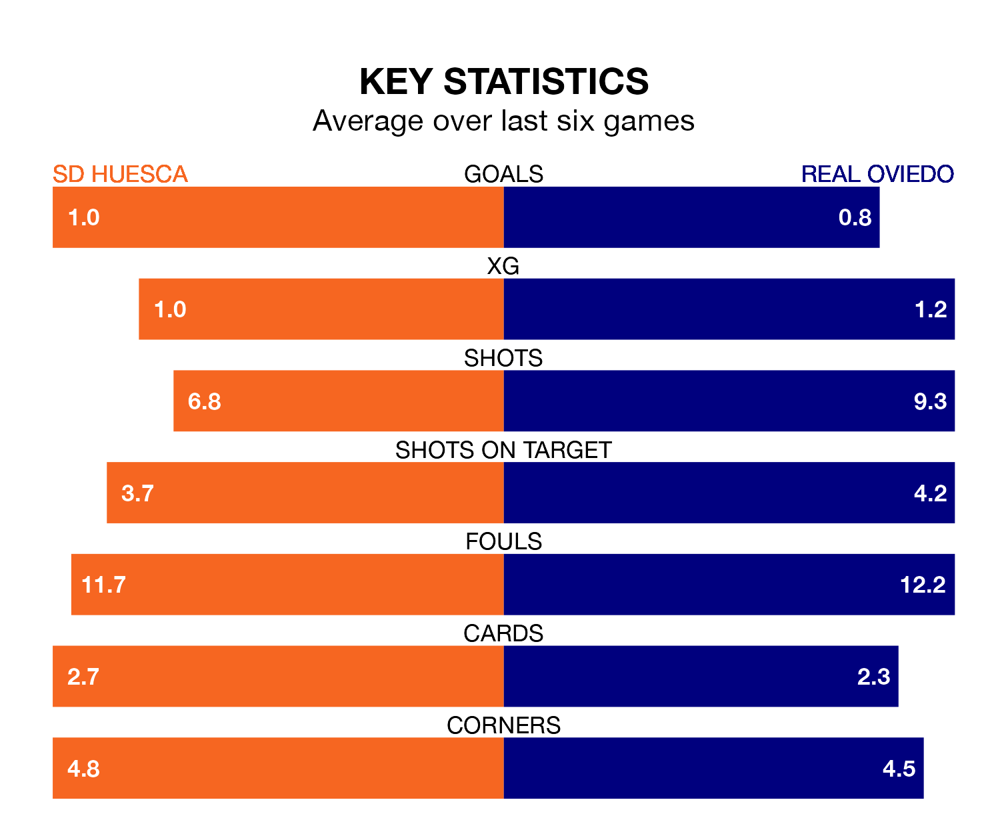

Two of the Segunda División's meanest defences go head-to-head at the Estadio El Alcoraz on Saturday, when SD Huesca host Real Oviedo.
Only one side – Leganés – has conceded fewer goals than Huesca to date: the home side have let in just 28 goals in 37 games.
Oviedo have conceded 33 goals in 37 games, giving them the fourth tightest back line so far this season.
Key to Huesca's home form has been Álvaro Fernández, who has allowed 0.7 goals past him per 90 minutes, compared to 0.86 for Leo Román in the opposite net.
In the last 10 years, Huesca and Oviedo have played each other on 13 occasions. They won four each, and they drew five times.
On average, Huesca scored 1.4 goals and Oviedo 1.1 in those matches.
Their last meeting was on October 4, when Oviedo won 1-0 at home.
Huesca are in disappointing form in the Segunda División, with one win and two draws from their last six games.
With two wins and a draw over that period, Oviedo's form is slightly better – they have taken seven points from 18, compared to the home side's five.
Huesca are 17th in the table after 37 games, of which they have won nine and drawn 15, earning 42 points.
The visitors are 11 places ahead of Huesca in sixth, with 14 wins and 13 draws putting them on 55 points.
Oviedo's Santiago Colombatto is among the league's most creative players, racking up eight assists in 32 appearances so far this season, and holding second spot in the Segunda División's assist charts.
For the hosts, Daniel Escriche Romero has set up the most goals, having laid on four assists in 32 games.
Huesca's last match was on Sunday, a 1-0 loss against Real Valladolid.
Oviedo lost 1-0 against CD Tenerife last time out, also on Sunday.
Updated: 10:44 (UTC), 30/04/24